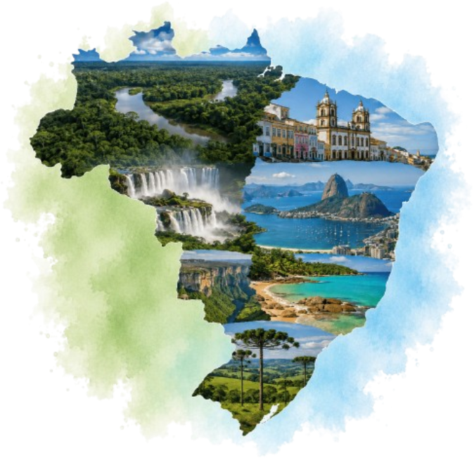
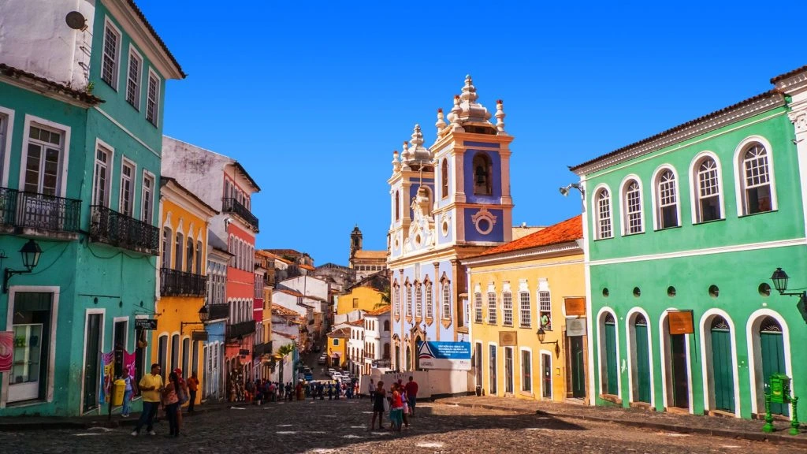
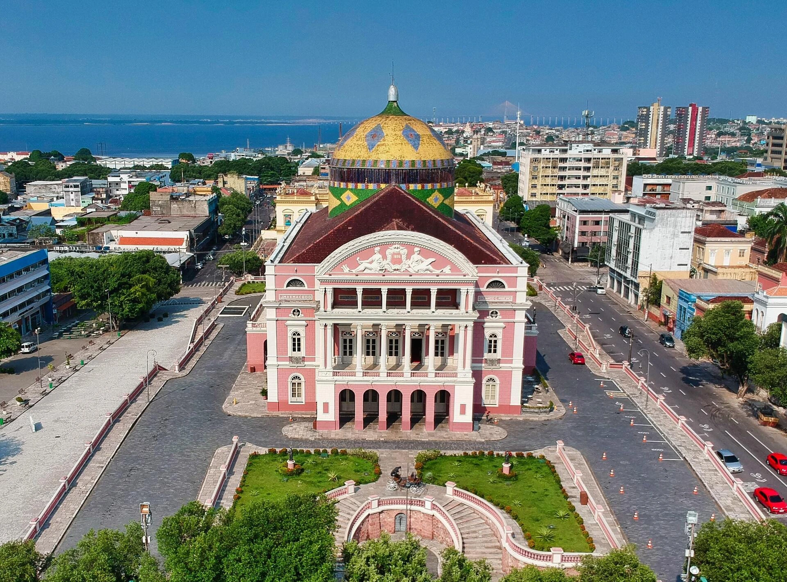
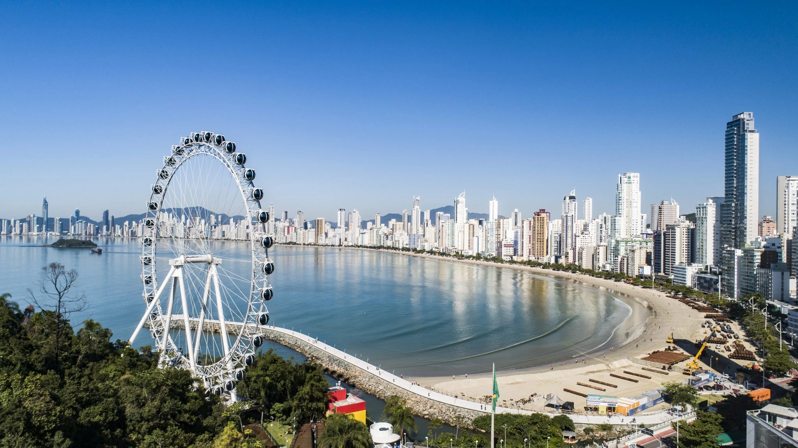

Planejamento
Pesquise sobre o destino, clima, atrações e melhores épocas para viajar.
Conheça destinos, culturas, sabores e paisagens de todas as regiões brasileiras.
 Ver destinos ➞
Ver destinos ➞
O Trilha Turismo Brasil é um guia turístico criado para ajudar pessoas a conhecerem melhor as regiões, estados e destinos brasileiros.
Aqui, o você encontra informações sobre paisagens, culturas, comidas típicas e pontos turísticos que mostram a riqueza e a diversidade do nosso país.
Mais do que apresentar lugares, o projeto busca incentivar um olhar mais curioso, consciente e valorizador sobre o turismo nacional.


Praias tranquilas, montanhas e cultura capixaba
Cidades icônicas, praias famosas e muita história.

Cultura vibrante, praias paradisíacas e tradição.

Natureza exuberante, rio, floresta e aventura.

Praias, montanhas e cultura diversificada.
Pesquise sobre o destino, clima, atrações e melhores épocas para viajar.

Cada região tem suas histórias e tradições. Valorize e respeite as diferenças culturais.

Preserve a natureza, evite disperdícios e apoie o turismo sustentável.